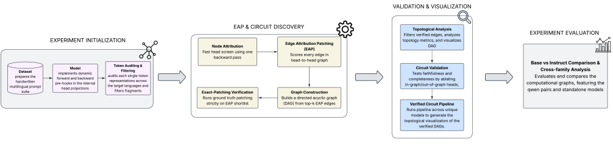
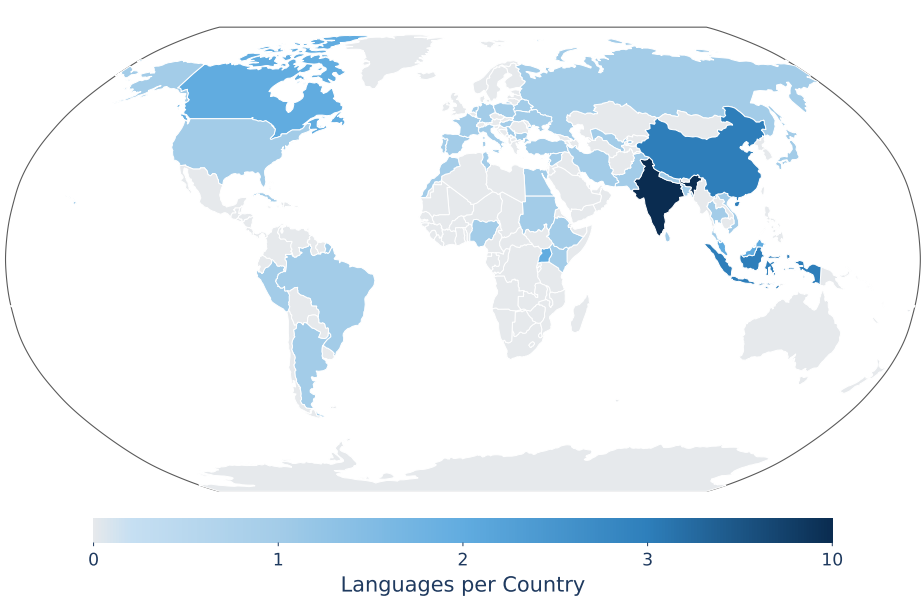
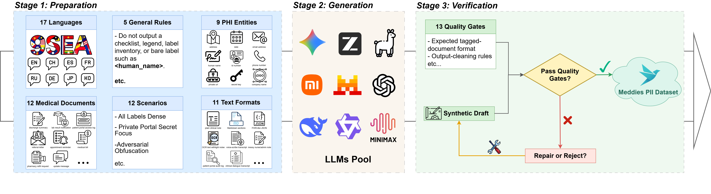
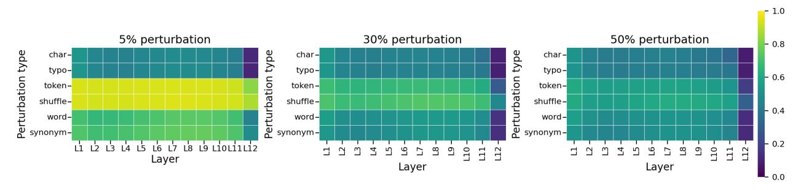
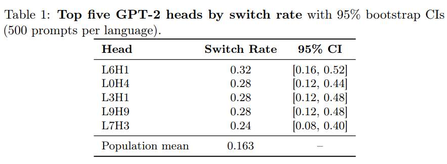
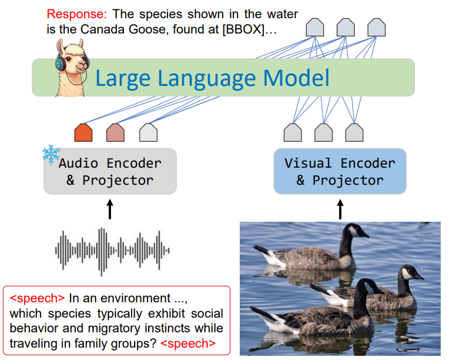

Publications
FTB Graph: Determining and Validating First-token Broadcasters and Language-Identity Head Circuits in Multilingual Language Models

Large language models must choose a response language early, but the causal circuitry behind this decision is poorly understood. We map first-token language-broadcasting circuits across six GPT-2, BLOOM, Pythia, and Qwen2.5 models using Edge Attribution Patching followed by exact activation-patching verification. The resulting graphs reveal deep-layer broadcasting hubs, greater topological sparsity as Pythia scales from 1B to 2.8B, and 84.7% structural overlap between Qwen base and instruct models, suggesting that routing circuits are largely established during pre-training. Weak agreement between attribution scores and exact causal effects further shows why exact patching is essential for reliable circuit discovery.
Fallacy Benchmarks Measure Scheme Recognition, Not Fallacy Detection
Fallacy-detection benchmarks pair fallacy classes with a single “valid” or “none” class that takes everything data collection did not label as a fallacy. A detector has two jobs, deciding whether an argument is fallacious and naming which fallacy it commits, and the false-positive rate is meant to measure the first. We show that what these benchmarks actually score is scheme recognition, the ability behind the second job. Their own test sets already show it: when a classifier misses a fallacy, the error lands on “none” rather than on another fallacy type, so detection is failing while classification holds. The reason is what the valid class lacks. The negatives that separate the two jobs are correct arguments using the same argumentation scheme as a fallacy, and they are scarce: nearly absent from the four benchmarks we examined, and rare even under deliberate search. A detector is therefore never tested where recognizing a scheme and judging its use come apart, and can pass on recognition alone. We construct the missing arguments, together with a control condition from the same pipeline that differs only in scheme, so whatever generation contributes, it contributes to both. The classifier labels the scheme-matched negatives as the source fallacy, and labels the wrong-scheme negatives as the scheme they actually use 85.9% of the time and as the source type 0.4%. The classifier has learned which scheme an argument uses, not whether it uses it correctly. The over-flagging follows: a model that scores 16.6% on CoCoLoFa’s own valid class flags 58.9% of the constructed arguments. The same dissociation appears in three zero-shot LLM detectors that never saw these benchmarks. We release the items as Scheme Foils. A reported false-positive rate should not be trusted as a measure of detection until the valid class has been audited for scheme-matched coverage.
CulturalRiddles: A Multicultural Benchmark of Riddles

Capturing how well LLMs can understand and model the diversity of cultures around the globe has increasingly gained importance as LLMs' language coverage has rapidly advanced. However, existing benchmarks are still knowledge- and English-centric with limited coverage and complexity. We propose MultiCulturalRiddle, a benchmark of culturally-grounded riddles, spanning 61 cultures and 51 languages, created in a participatory community effort. These riddles are both hyper-specific to each culture, require factual knowledge, language skills, social knowledge, and strong abductive reasoning skills to solve. We benchmark 24 LLMs with both automatic and human evaluation and release all artifacts publicly.
Meddies-PII: A Multilingual Framework for Personally Identifiable Information Extraction in Clinical De-identification

Clinical de-identification depends on accurately identifying personally identifiable information (PII). However, manually annotated datasets are costly to build, and existing synthetic alternatives often provide limited generation details or use relatively simple synthesis strategies. We introduce Meddies-PII-Dataset, which contains one million synthetic clinical documents across seventeen languages and nine PII labels. Attribute-conditioned prompts generate the documents, and thirteen deterministic gates check their structural and annotation validity. To assess the dataset’s utility, we train Meddies-PII-Model, a BIOES token classifier. We compare it with existing PII extraction systems using exact-match entity-level F1. Meddies-PII-Model achieves the highest score among the evaluated systems on all reported benchmarks, with a mean F1 of 0.827 across fifteen external benchmarks compared with 0.658 for the strongest baseline. Upon acceptance, we will publicly release the dataset, benchmark, model, generation framework, and evaluation code to support research on multilingual clinical de-identification.
Last Translation Benchmark
For scientific progress, we need benchmarks that test the limits of state-of-the-art models, and evaluation methods that inform us about failure cases. As models get stronger, standard benchmarks for machine translation are approaching saturation. Further, automatic translation metrics are unreliable, vulnerable to reward-hacking and provide unactionable assessments. Even gold human evaluation is not problem-free, because it often lacks reproducibility, objectivity, and scalability. Overall, this prevents us from tracking objective progress in the field and identifying pathways for improvement. We introduce the Last Translation Benchmark, a collection of human-authored and peer-reviewed examples (texts, images, audio, videos) that break leading machine translation models. We also present a new evaluation approach: each example comes with handcrafted verification rules describing concrete failure cases on that example, therefore allowing reliable and actionable future evaluation. The Last Translation Benchmark is a live dataset that accepts ongoing contributions. The latest version is LTBv1, containing accepted contributions prior to September 1st 2026, with future releases planned as new data is continuously collected.
How Perturbations Propagate: A Multi-Level Analysis of Robustness in Large Language Models

Language models encounter typos, corrupted text, altered words, and disrupted token order, yet robustness is usually evaluated only through output behavior. We study how six naturalistic and synthetic input perturbations propagate through decoder-only language models at three levels: output behavior, hidden-state geometry, and attention-head function. We evaluate behavioral effects across four GPT-2 and two Qwen2.5 checkpoints by analyzing layerwise geometry using centered kernel alignment and intrinsic dimension, and examine attention-head responses in GPT-2. Perturbation types produce distinguishable metric profiles that are not fully captured by output measures and are only partly consistent across the tested checkpoints. Copying scores are especially associated with activation-patching recovery under token substitution and shuffling. Gradient-guided HotFlip perturbations also cause stronger behavioral and representational disruption than rate-matched random token substitutions in GPT-2; their behavioral effects are consistent across all six tested checkpoints. Our results show that robustness claims based on a single behavioral or representational metric can be misleading, and motivate multi-level evaluation of how perturbations alter language-model computation.
First-Token Broadcasters: Mechanistic Analysis of Language Identity and Distributed Robustness in Transformers

Why do multilingual language models sometimes generate in the wrong language, and why is this so hard to fix? We introduce Language Identity Head Ablation (LIHA), a causal intervention that zeros each attention head individually and measures the resulting language switch rate across a parallel dataset of 2,700 prompt-language pairs spanning seven languages. Applied to GPT-2, LIHA identifies a small set of first-token broadcaster heads—led by L6H1 (switch rate 0.32, 3.23σ above the population mean)—that attend persistently to the first prompt token, propagating its language signal throughout generation. Compensatory redistribution when heads are ablated is statistically significant (p < 10−5) and follows a directional, hierarchical pattern: compensation always recruits heads in layers above the ablated head, suggesting a feedforward cascade rather than global diffusion. To probe how training regime shapes these circuits, we apply LIHA to a controlled pair—Qwen2.5-1.5B-Base and Qwen2.5-1.5B-Instruct—identical in architecture and size, differing only in training. The base model is nearly flat (max SR=0.016, 200/336 heads at SR=0.0); the instruct model concentrates causal influence sharply at layer 0, led by L0H5 (SR=0.224, 8.93σ above mean), with all other layers near zero. This controlled comparison provides direct causal evidence that instruction tuning reorganizes language identity circuits toward early-layer localization. Extended experiments with Chinese and Russian confirm that first-token broadcasting is script-specific in GPT-2, with non-Latin languages handled at layer 0—the same locus as the instruction-tuned model. Code and data will be released upon publication.
SilVar: Speech-Driven Multimodal Model for Reasoning Visual Question Answering and Object Localization

Visual Language Models have demonstrated remarkable capabilities across various tasks, including visual question answering and image captioning. However, most models rely on text-based instructions, limiting their effectiveness in natural human-machine interactions. Moreover, the quality of language models primarily depends on reasoning and prompting techniques, such as chain-of-thought, which remain underexplored when using speech instructions. To address these challenges, we propose SilVar, an end-to-end multimodal model that leverages speech instructions for reasoning-based visual question answering. Additionally, we investigate reasoning techniques at different levels, including conversational, simple, and complex speech instructions. SilVar is built upon CLIP, Whisper, and LLaMA 3.1-8B, enabling more intuitive interactions by allowing users to provide verbal or text-based instructions. To this end, we introduce a new dataset designed to challenge models with speech-based reasoning tasks for object localization. This dataset enhances the model’s ability to process and explain visual scenes from spoken input, moving beyond simple object recognition to reasoning-based interactions. To our knowledge, SilVar is the first open-source, speech-driven VLM. We believe SilVar will inspire the next generation of multimodal reasoning models, advancing toward expert artificial general intelligence.